Navigations
NOTE: The build is still in beta, sorry for lag :sob:

Diamiter:
Mass:
Resources:
Useful Data:
Welcome to Solaris! For full experience please use laptop or PC
If you'd like to chat about your project, get an opinion or help, feel free to contact me either:
Add me to friends on Discord: 0x024_
Join my Discord server: https://discord.gg/ATgG96j2z6 1. Navigate to channel '#ticket-creaton'. 2. React to the bot's message with set reaction. 3. Now all that's left is to drop the info about terrain in need, or question.
*Try Zooming in with scroll!*